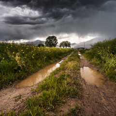

For an accurate and waterproof forecast when you need it.
THE CITY OF FRANKLIN
TODAY'S WEATHER
What To Expect:
Currently: °F
Today's High: °F
Today's Low: °F
Precipitation:
Wind Speed: mph
Windchill: °F
10 DAY FORECAST
Day 1
Day 2
Day 3
Day 4
Day 5
Day 6
Day 7
Day 8
Day 9
Day 10
89°F
87°F
78°F
75°F
72°F
72°F
79°F
83°F
85°F
89°F
EARLY START TO MONSOON SEASON

The monsoon season, which normally begins in Franklin around July 13-14, arrived early when the dew point topped 55 degrees for three consecutive days during the first week of the month. But an early start to the monsoon does not necessarily mean we can expect an especially wet one, weather experts say. "It has never been shown that the start date has any relation to the length or intensity of the monsoon," said Randy Cerveny, professor of geography at Arizona State University. "Last year, we had an early start to the monsoon and a month of nothing in Franklin. It started June 17 and we didn't really have any significant rainfall until the end of July." John Adair, a meteorologist with the National Weather Service in Las Vegas, said he would not read anything into the early start of the monsoon season in Franklin. Data obtained from the Western Regional Climate Center in Reno, Nev., indicates the heaviest rainfall in Franklin for the monsoon months of July and August was 7.83 inches in 1931. That included the wettest August on record with 6.57 inches. Other wet monsoon seasons of July and August included 6.6 inches in 1919 and 6.27 inches in 1904. The two driest monsoon season recorded by the WRCC were .04 inches in 1928 and .07 inches in 1989. However, data is only available for 1901-1993. WRCC spokesman Jim Ashby said there has not been a reliable weather spotter in Kingman since 1993 to gather and report the necessary information. In addition, some months for the years 1901-1993 are missing data from up to five days of a particular month. The result is incomplete information for the monsoon months in 1901, 1907, 1909, 1913, 1936, 1938-39, 1944, 1954, 1967 and 1992.